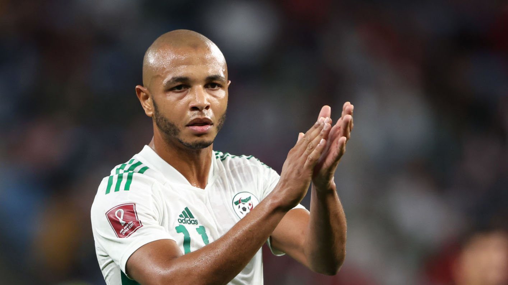

Bienvenue sur la page de Yacine Brahimi

Valeur actuelle: 6M d'€
Biographie
Yacine Brahimi, né le 8 février 1990 à Paris, est un footballeur international algérien qui évolue au poste d'attaquant à Al-Rayyan SC
Carrière en club
Stade rennais (2008-2012)
Grenade CF (2012-2014)
FC Porto (2014-2019)
Al-Rayyan (depuis 2019)
En Nationale
En août 2010, il est retenu par Erick Mombaerts en équipe de France espoirs, mais reste dans les tribunes lors d'un match perdu par les Bleuets face à la Belgique (0-1). Il y fait finalement ses débuts le 7 septembre 2010 face à Malte, délivrant une passe décisive.En février 2013, la Fédération algérienne de football annonce que le joueur est qualifié pour jouer en équipe nationale. Il est convoqué pour la première fois en mars 2013 pour un match de qualification à la Coupe du monde 2014 contre le Bénin qui voit ses débuts internationaux, le 26 mars 2013, au stade Mustapha-Tchaker de Blida (victoire 3-1). À nouveau convoqué en juin 2013, il reste sur le banc face au Bénin mais est titulaire lors du déplacement au Rwanda (1-0), où sa bonne prestation est saluée par la presse. En juin 2014, lors de la Coupe du monde au Brésil, il se distingue et inscrit un but contre la Corée du Sud, avant une qualification historique de l'Algérie au second tour. Depuis, son entente avec Sofiane Feghouli constitue l'un des atouts du jeu offensif algérien. En juillet 2019, il remporte avec les Fennecs la Coupe d'Afrique des nations.